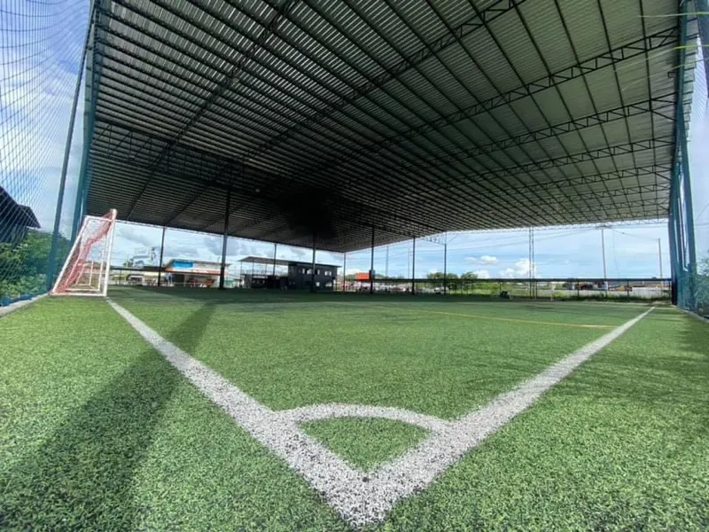

THA · HOST
Cilie Sports Club
シラチャ / バンコク。日系とタイ人チームを併せ持つ主催クラブ。
Tournament Overview
U-15 のみで構成された国際大会。バンコク近郊の Dynamic Football Camp に、日本・韓国・タイの流儀が集まりました。
Fact Sheet
Venue
会場はバンコク東方、サムットプラーカーン県バンボー地区の Dynamic Football Camp。宿泊とピッチが近接し、海外チームの遠征拠点として機能しました。
主催クラブの日常拠点はチョンブリー県シラチャの Cilie Arena。雨天でも練習できる屋根付き専用場を核に、街に根ざしたクラブ運営を続けています。

Cilie Arena · Si RachaClubs
公式サイト ASIA CHALLENGE CUP 2025 の参加クラブに基づきます。
シラチャ / バンコク。日系とタイ人チームを併せ持つ主催クラブ。
J2いわきFC アカデミー。国際経験の拡大を目的にタイ遠征。
韓国・釜山。フィジカルと技術で大会に強い印象を残した招待クラブ。
タイの強豪校。スピードと身体能力で初戦から存在感。
公式ランキングに名を連ねたタイの参加校。
Borussia Dortmund Thailand。ドイツ人選手も在籍する国際色の強いチーム。
シラチャの名門。大会2日目の公式ランキングに登場。
公式ランキング Day 2 に名を連ねたタイのクラブ。
公式ランキング Day 2 に名を連ねた参加クラブ。
Protocol
U-15 カテゴリーの国際試合として実施。試合時間・人数・ボールサイズなどの細則は、参加クラブへ配布する大会要項を正とします。
レガース（すね当て）の着用を必須とします。安全と品位を、すべての試合の前提に置きます。
勝敗と同様に、国際交流を大会の目的とします。言語や文化の違いを尊重し、ピッチ内外でのフェアプレーを求めます。
本大会に続き、2026年1月には大阪・J-GREEN堺で Asia Challenge Cup in Osaka（U10 / U12）を開催。ブランドはアジアを往復します。